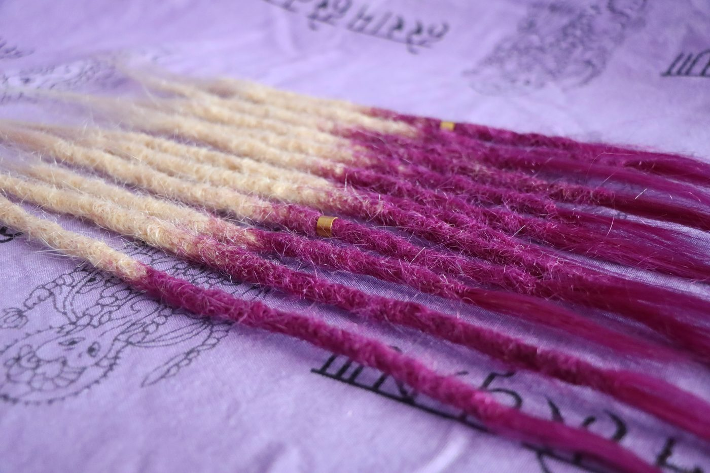

Zaczęło się w 2007 roku
Nasza fascynacja dredami sięga 2007 roku — to wtedy się poznałyśmy. Patrycja nosiła już wtedy dready i potrzebowała kogoś, kto pomoże jej o nie zadbać. Tak Maja została jej asystentką i osobistą dreadmakerką. Przez kolejne lata szlifowałyśmy umiejętności, aż postanowiłyśmy podzielić się naszym skillem ze światem.
Dready wykonujemy wyłącznie przy pomocy szydełka, splatając włosy bez żadnych preparatów. Wypracowałyśmy technikę, która nie skraca mocno długości włosów i nie jest dla nich inwazyjna. Do każdego klienta podchodzimy indywidualnie i z uważnością — u nas możesz poczuć się naprawdę zaopiekowany.
 Dreadmakerka
Dreadmakerka
Maja
Oprócz dreadmakingu uczy angielskiego i tworzy własną muzykę. Uwielbia tenisa i opiekę nad kotami. Najbardziej lubi poznawać nowych ludzi — zagadnij ją o duchowość albo psychoterapię, a nie przestaniecie rozmawiać. Poprawki dredów? To dla niej forma medytacji.
 Dreadmakerka
Dreadmakerka
Patrycja
Z wykształcenia nauczycielka, pedagog i technik weterynarii, a z zamiłowania — fotografka lasu. Sama nosiła dready przez wiele lat, więc wie o nich niemal wszystko. Kocha naturę, dlatego najchętniej pracuje na dredach naturalnych.
To, co nas wyróżnia
Zero chemii
Dready wykonujemy wyłącznie szydełkiem — żadnych preparatów usztywniających ani inwazyjnych metod.
Włosy zostają długie
Nasza technika nie skraca mocno długości włosów, w przeciwieństwie do wielu innych metod.
Indywidualne podejście
Każdego klienta traktujemy uważnie i empatycznie — dopasowujemy technikę i tempo do Ciebie.
Twoja intencja, nasze ręce
Spersonalizowane zestawy dredów budujemy wokół Twojego słowa klucza — Twojej historii.
Gotowa na własne dready?
Zobacz cennik i umów się z nami — z przyjemnością poznamy Twoją historię.